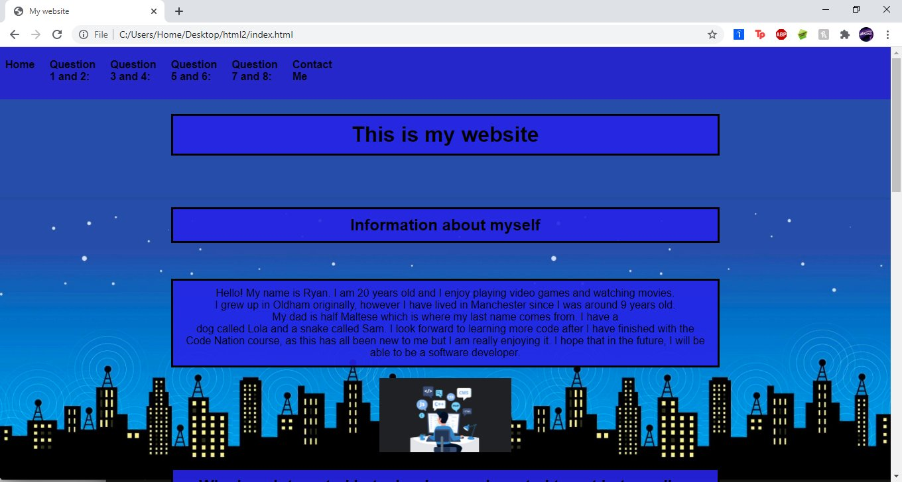
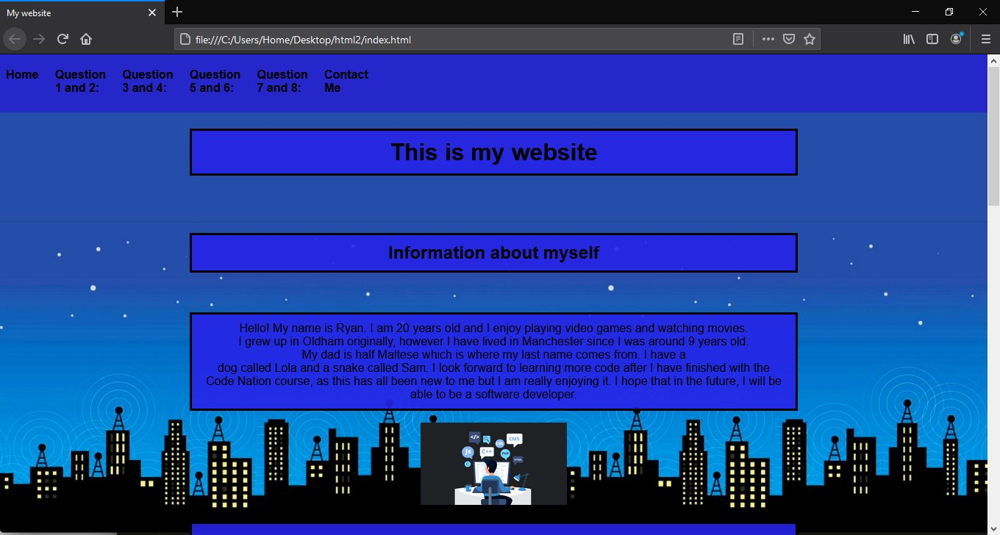

Overall, I think the way my website looks is adequate. It's not very interesting to look at however it does its job and presents the information well. I like the colour scheme that I used as the blue boxes blend nicely with the background. I made the
text big enough to be readable by the majority of users and made the font easily readable. I think to make my website better, I could add some more images or add some more information to my 'about me' section.
If there
was anything I would add to my website, I would probably change the way the navigation bar looks at the top of the page. Personally, I think that the bar protrudes the screen and I would change this by making it disappear as you scroll down
the page.
Another thing I would like to do is maybe add some graphics to my website, however I understand that I would need a lot more skill than I currently have to do something like that, so I would consider learning it for a later project
instead.
Below is a screenshot of my website homepage working in Google Chrome.

Below is a screenshot of my website homepage working in Mozilla Firefox.
